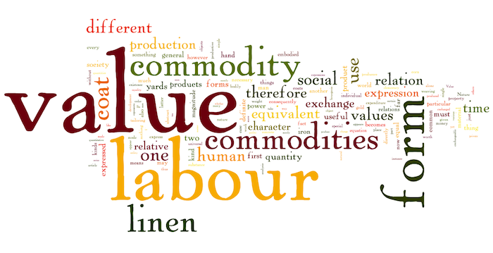
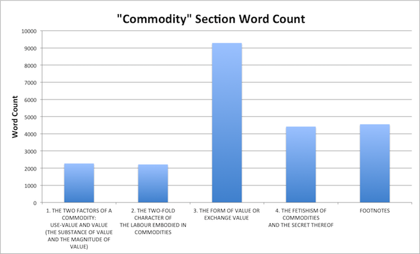
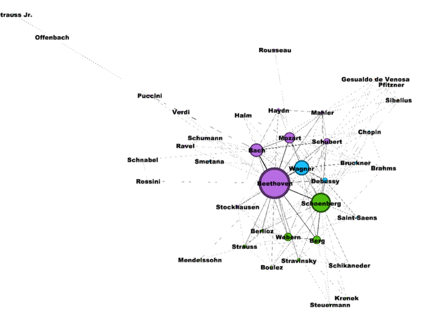

<section id="bio">
<div class="container">
    <h3>Mapping and Data Visualization in Marx</h3>
    <div class="panel panel-default">
    <div class="panel-body">
        
        <p>In spring 2016 I served as Teaching Assistant for <a href="http://www.rochester.edu/college/eng/people/faculty/burges_joel/index.html" target="_blank">Joel Burges</a>'s graduate seminar <em>Marxism and Forms</em>. Although the seminar did not have an explicit digital component, our idea was that we could use DH's contemporary interrogation of data and visual information as a guide for reading the Marxist tradition.</p> 
        
        <p>As it turns out, the Marxist tradition is full of writers using charts, graphs, and data to support their arguments. Our challenge to the class: make some of your own!</p>
        
        <p>We started out with simple visualizations like word clouds and bar graphs, and eventually students expanded their skill set to create digital objects like network visualizations in Gephi.</p>
        
        <hr/>
        
        <h5>Word Clouds of Marx's <em>Das Kapital: Vol. 1</em>.</h5>
        
        <blockquote>
        <p></p>
        <p></p>
        </blockquote>
        
        <hr/>
        
        <blockquote>
        <p></p>
        </blockquote>
            
        <hr/>
        
        <h5>Student Work: Network Visualization of Composers in Adorno's <em>Philosophy of New Music</em></h5>
        <h5>by Erin Miller</h5>
        
        <blockquote>
        <p></p>
        </blockquote>    
        
    </div>    
    </div>    
</div>    
</section>

